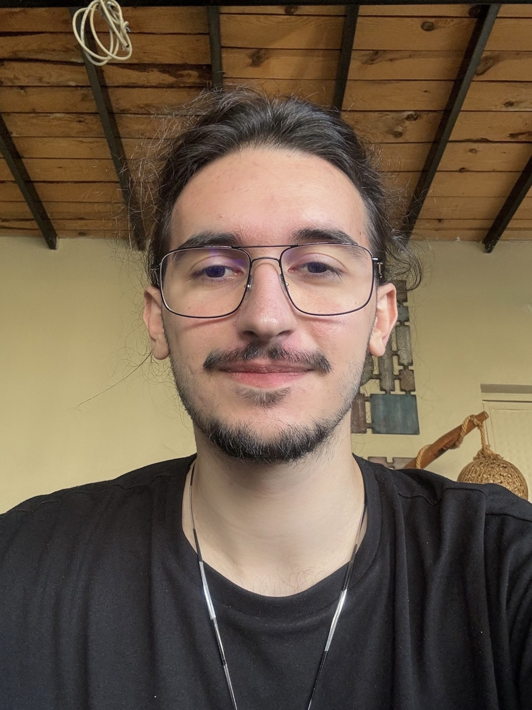

This is my first decent animation work,
"Dotto•Man". Since he turned from a dot to a man,
its name was going to be "dot to man",
but then the character found his own nick name
when the cloak came along.
"Dotto" means "knowledgeable" in Italian,
and "stubborn, tough" in Turkish Native Dialect.
Maybe the character will deepen in this direction
and I will continue drawing, who knows?
Dotto may be coming to put a dot to some issues.
Period!

Karakterler
Nokta: Meselelere -ve genel olarak şeylere- nokta koyarak bitirme, sonlandırma,
neticeye erdirme özelliğine sahip. Bu gücünü kötülüklere karşı kullanmayı seçmiş. Bir şeyleri sona
erdirmesini kontrol edememesinden korktuğu için iyiliklere yaklaşmakta temkinli, bu durumdan mağdur.
Bilgili ve bilgisi nazarında inatçı biri.
Soru: yakında...
Ünlem: bu da yakında...
Virgül: gelcek gelcek...
Fikirler
Aile fikri:
Noktalama işaretlerinin vücut bulmuş halleri olan bu varlıklar, bir ailenin bireyleridir. Bir gün sadece birer işaret olmaktan sıkılıp insansı suretlere bürünmüş ve kendilerine roller, amaçlar seçmişler. Ailenin en büyük çocuğu olan Nokta, veya onu tanıyanların seslendiği şekliyle Dotto, ona doğuştan verilmiş olan bu özel gücünü insanlığı ve genel olarak varoluşu kötü etkilediğini düşündüğü durum ve olayları bitirmekte kullanır. Bunu yaparken de bu “sorunlara” yapıcı çözümler bulması gerekir. Sadece ellerinden noktalama ışını göndermesi olayları sonlandırmak için yeterli değildir. Noktalamak için doğru şeyi seçmeli, noktalarken geçerli sebepler bulmalıdır.
Teklik fikri:
Tüm işaretler noktadan türemiştir. Noktalama işaretleri ismi (punctuation) buradan gelir (punctus: nokta). Dotto bu işaretlerin hepsini türetme özelliğine sahiptir. Beraberinde bunların güçlerine de hakimdir. Zamanla noktaya diğerlerine göre daha az benzeyen işaretler (parantez, tire, eğik çizgi vb.) ondan ayrılmış ve kendi bireyselliklerine kavuşmuşlardır.
Hikaye
Dünya, bir süredir fazlasıyla sıradan. İnsanlar, fizik kuralları ile etten-kemiktenlik arasında mahsur, bu durumdan genellikle memnun durumda. Aralarından bazıları zaman zaman özel/doğaüstü niteliklere sahip oldukları iddiasında bulunsa da bunların çoğu safsata, bazısı mental olarak sağlıksız,
bir kısmı da muhtemelen açıklanabilene dek kendince doğru. Teknoloji, orta ayar bilimkurgunun tarih boyunca tahmin ettiklerinin dışına çıkmadı. Savaşların, zulümlerin, beşeri afetlerin sürdüğü bu kaotik düzende iyi şeyler de olmuyor değil tabii.
Fakat Dünya'nın sıradanlığından bahsederken bu kötülüklerden söz
edilmezse bu sıradanlık, sükunet ile karıştırılıp büyük yanılgılara düşülebilir.
Bu süregelimde insan; anlatmaya, çizmeye, yazmaya devam etti. Anlattıkça hayal kurdu, çizdikçe ayna kurdu, yazdıkça da cümle kurdu. Cümle kurarken noktalama kullandı. Bu noktalamalar zaman içinde yoğuruldular. Yazılanlara ve dolayısıyla yaşananlara şahitlik ettiler.
Şahitlikleri onların cansız şekillerinde anlamsız kaldı. Peki, gerçekten öyle mi oldu?
Bu hikayede noktalamaların maceralarını biraz komedik, biraz didaktik, biraz da dramatik bir ağızla anlatadurayım, bu görünüşte ciddiyetsiz, yüzeysel hatta 'öylesine' duran bölümleri tüketirken aklınızın bir köşesinde şunları bulundurmanızı rica ediyorum:
Bu, tek görevi olmaya sürgün edilmiş sessizlerin hikayesi. Bu, yazılanlara anlam ve mantık katarken birçok malzemeyle üretilip türetilmişlerin hikayesi. Bu, anlamsız kalan şahitliklerin hikayesi.
Ama farklı bir üslupta.
0- Sıfır Noktası
Boşlukta nokta belirdi. Zıpladı, zıpladı, insana dönüştü. Tamamen mürekkepimsi bir maddeden, stabil olmayan dalgalanmalarıyla etten-kemikten olmadığı belirgin bir insan. Yürüdü, sırtına kırmızı bir pelerin döküldü. Bir amaç hissediyordu. Zaman içinde üzerine düşündüğü bir amaç. Tek dizine çöktü, aniden sıçradı. Uçmaya başladı Nokta. İsmi buydu. Şeklinden bağımsız, hâlâ Nokta'ydı.
Biri diğerine bıçak çekmiş iki kişi gördü. Bıçak çeken kötücül, çekilen korkmuş görünüyordu. Hissetti Nokta, suçu hissetti. Bunu durdurmalıydı. Onu gören haydut, telaşa kapıldı, diğeri de şaşkındı. Neyin nesiydi bu pelerinli insansı petrol? Nokta, yerin 3-4 metre üzerinde havada süzülüyordu. Yumruğunu bıçaklıya doğrulttu, ne yaptığını biliyor gibiydi. Silah gibi ateşledi kolunu Nokta. Yumruğundan siyah bir mürekkep topu fırladı kurşun gibi ama el boyutunda. Neyden olduğu belirsizdi fakat gören mürekkep sanardı. Top, hızla haydutu vurdu, etrafını sardı, kavradı, çevreledi ve içine alarak büyük bir noktaya dönüştü. Ardından giderek küçüldü. “Güzel” dedi Nokta, “Bu suça bi' nokta koymanın zamanı gelmişti.”
1- Garip Bir His
Zıpladı nokta, havada dönüştü Dotto. Tanıyanlar ona böyle seslenirdi. Kendisi de severdi bu ismi. Farklı hissettirirdi. Biz de onu öyle analım. Hava bariyerini aşarak uçtu Dotto kilometrelerce. Aniden durdu. Garip bir his oluşmuştu içinde, tanıdık bir his. Bu kayada bir terslik vardı. Rüzgar farklı esiyordu sanki etrafında. Bir süre baktı, sonra bir ses işitti. Kilometrelerce arkasından gelmişti bu ses Dotto'nun. Klavye sesi… Gitmesi gerektiğini hissetti. Yanlışlık sezmişti. Uçarak kayadan uzaklaştı. Kaya bir süre nesneliğini korudu. Dotto uzaklarda meşgulken şekil değiştirdi kaya. Sanki mürekkeptenmişçesine dalgalandı ve kuyruklu siyah bir küre oldu.
Bu sırada Dotto'nun karşısında, masa başında bilgisayarına bir şeyler yazan bir çocuk vardı. Çocuğun klavyesiyle yazdıkları, Dotto'nun gözünün önünde beliriyordu. “Bunları biliyor muydunuz? Tüm kelebeklerin ömrü 1 günd-” tam cümlesini yazmayı bitirecekken Dotto elini kaldırdı: “Dur!”. Açıp doğrulttuğu avucunun etrafına halkalar oluşmaya başladı. Eş zamanlı olarak çocuğun yazdığı havada beliren cümlelerdeki tüm noktaların da etrafında benzer halkalar oluştu. Ardından noktalar Dotto'nun eline doğru harekete geçti, elinde birleşti ve büyük bir nokta oluşturdular. Dotto elindeki nokta topunu havaya kaldırdı, momentumunu topladı ve cümlelere doğru fırlattı. Cümleleri eriten nokta topu yerden sekerek bilgisayarı ve masayı da içine aldı ve noktaladı. Dotto konuştu: “Bazıları 1-2 aya kadar yaşayabilir. Bu eksik bilgiyi noktalamanın vakti gelmişti.”
2- Eski Bir Dost
“Cümle yazdı bir el. Birden fazla cümle yazdı, cümleler oldu. Cümlelerin sonlarına noktalar koydu. Yargı belirtiyordu çünkü cümleler. Bu noktalar arttıkça arttı. Sonunda bunların birinden çıktı Dotto ve düşmanı.” Bu cümleleri yazdı el ve gerçekten de dediği gibi oldu. Yumruklaşarak çıktılar. Büyüyerek çıktılar. Dövüşerek uzaklaştılar yazı yazan elden. Yılların dostluğu, ebedi bir düşmanlığa mı dönüşmüştü? Neden ölümcül bir kavgadaydı Nokta ve Virgül?
(7 yıl sonra, Günümüz)
Terk edilmiş bir fabrika. Gece vakti, yağmurlu. Kapüşonlu bir adam kapının kilidini açtı. Yüzü görünmüyordu sadece sakalı gibi görünen siyah bir çıkıntı çenesinin olması gerektiği yerde belli oluyordu. Şalterleri indirdi, yavaş yavaş aydınlandı fabrika. Lambaların bazıları yanmadı, bazıları göz kırpıp geri söndü. Fabrikada pek bir şey yoktu. Birkaç dönen bantlı makine, onlarca malzeme dolu torba, ve 1-2 tane daha oda kapısı. Kapüşonunu indirdi. Gerçekten de uzun sakallı bir adamdı. Gözleri biraz boş bakıyordu. Aniden derinleşti gözler. Sıradan biri değil gibiydi. Odalardan birine yaklaşınca duvara gölgesi düştü. Gölge dalgalandı. Ama önceki şeklinden farkı yoktu.
(Bu sırada)
Dotto yüksek bir binanın dam kenarında oturuyordu. Şehir burdan bakınca çok güzel ama kesinlikle masum değildi. Düşkün görünüyordu. Aklına sürekli geçen gün içinde bulunduğu o his geliyordu. Tanıdık ama garip bir his. Hoşuna gitmiyordu bunu düşünmek. Elini kafasına götürdü, çekti çıkardı düşünceyi aklından. Nokta topu oluşturdu elinde ve fırlattı. Düşünceyi sardı nokta. “İyi,” dedi Dotto. “Akla takılan gereksiz düşünceye nokta koymanın vakti gelmişt—----” Son noktayı koyamadı cümlesine. Fırlattığı nokta topu da kaya düşüncesinin her tarafını saramamıştı. Topun altına bir çıkıntısı kalmıştı düşüncenin. Son söz ekranı bozuldu, her yer karardı.
3- Düzen
İçinde yaşadığımız dünyanın öyle ya da böyle bir düzeni var.
Bu süregelimde insan; anlatmaya, çizmeye, yazmaya devam etti.
Yazarken cümleler kurduk ve noktalamalar kullandık. Bu noktalamalar zaman içinde yoğuruldular.
Yazılanlara ve dolayısıyla yaşananlara şahitlik ettiler. Şahitlikleri onların cansız şekillerinde
anlamsız kaldı. Peki, gerçekten öyle mi oldu?
Bir zamanlar evlat, babam bana bu kullandığımız noktalamaların canlı olduğu hikayeler anlatırdı.
Hepsinin kendine has karakterleri, özellikleri vardı. Onları, şimdiye dek yazılmış her esere
bir şekilde şahit olmaları sebebiyle istisnai bir farkındalık sahibi olarak hayal eder,
hepsine öznel motivasyonlar kurardı. Sen nasıl edersin bilmem ama ben bu hikayeleri sadece
kurgusal öyküler olarak düşünmezdim.
4- Türetim
Noktadan virgüle, virgülden insan biçimine dönüştü düşünce. Dönüşürken biraz kıvrandı.
“Ahh… Merhaba, eski dostum. Uzun zaman oldu. Bu an hiç gelmeyecek sanmıştım.”
Dotto şaşkındı, donakaldı. “ Sen…” dedi, tamamlayamadı cümlesini. “Evet…Evet, ben.
Hayalet görmüş gibisin.” Dotto'nun şaşkınlığı yerini meraka bırakmıştı. “ Uzun süredir
izlerini sadece kelime aralarında görüyordum. Sanmıştım ki…” “Ne sandın, öldüğümü falan mı?
Ebediyen cümle içlerine sıkışıp kaldığımı mı? Hayır, Dotto. Son yaşadıklarımızdan sonra ben de
öyle sanmıştım. Ama sanırım ikimiz de doğamı unutmuşuz, öyle değil mi? Senin aksine ben,
devam ettirmek için varım.” Elinde bir defter oluştu, bir şeyler karaladı. Havalandı.
Toz ve dumandan kaskı oluştu, parladı. “ Sohbetine doyum olmuyor eski dostum, ama ilgilenmem gereken,” gülümsedi.
“...yarım kalmış işlerim var.” Dotto ona doğru uçtu. Kaybolmadan yetişemedi.
“Bir yere uçtu Dotto. Sakladığı bir şeyi bir yerden çıkardı. Çıkardığı deftere şunları yazdı:
Yardımınıza ihtiyacım var kardeşlerim! Eski günlerin hatrı kaldı mı?”
(Dış ses bunları söyler ve sayfayı çevirdi. Dinleyenler sorular sordular: “Ben bu karakterler
konuşamıyor sanıyordum, nasıl oldu?”, “Kardeşlerini mi çağırdı? Dotto'nun kardeşleri mi var?”,
“Neden ‘eski dostum' dedi ki?”. Söze girdi anlatıcı: “Sakin olun çocuklar. Bırakın da hikayeyi bitireyim.”)
Fabrikaya döndü düşünce.
Burası işlek bir yer hâline gelmeye başlamıştı.
yürüyen bantlarda silgiler vardı. “ Güzel,” dedi. “Bu yarım kalan işlere devam etme vakti, ”
Hakkımızda

Alper Erdinç
Computer Eng. Student
2-D Animator
İletişim
İletişim kurmak veya sponsorluk & işbirliği için aşağıdaki google formunu kullanabilirsiniz. Aklınızda bu projeyle ilgili bir fikir mi var? Bir selam verin, konuşalım.
(Yakında sunucu işlerini hallettiğimde email atabileceğiniz bir form gelecek. Şimdilik Google Forms işimizi görür.)